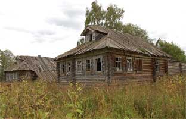

| ПОГИБШАЯ ЦИВИЛИЗАЦИЯ Архангельская область АВЧ (av4) wrote in arch_heritage, @ 2008-02-16 21:39:00 |
| Год назад я в LiveJournal я встретил эту статью, меня она поразила трагичностью в тиши. Сегодня она актуальна, как никогда, потому что погибает целая русская цивилизация. Я видел в Кировской области такие же брошенные дома ещё при советской власти. Разрушение началось уже тогда. Апрель 2009 |
| Русский Север гипнотизирует как нечто нереальное. Почти что мир теней. Грандиозная природа
- чистейшие озера и реки, леса с грибами-ягодами, огненные закаты. И абсолютная пустынность,
тишина, безмолвие. Огромная пустота, откуда ушла жизнь. Кое-где что-то похожее на нее еще
теплится. Но большая полноценная жизнь кончилась. Возможно, навсегда. Всюду видны материальные
остатки некогда большой культуры. Кто бывал на Севере, знает, что тамошние избы сравнимы по
величине с барским домами среднерусских усадеб. Не буду повторять банальности про
художественные достоинства деревянного зодчества, про секреты плотницкого ремесла, тонкое
чувство гармонии в объемах и декоре. Все так и есть. Почерневшее некрашенное дерево само по
себе производит сильное впечатление. Весь Русский Север поражает в первую очередь ощущением
чего-то настоящего, сильного, честного. Чего не может дать никакая пестрая и компромиссная
городская культура.
На дороге Пудож-Каргополь в деревне Печниково пока еще стоит указатель - Кучепалда 12 км. Свернув на этот проселок (асфальта там и в помине не было), можно попасть в полностью умерший мир. Странно, что дорога еще не заросла совсем. Но скоро зарастет. На полпути к конечному пункту посреди поля одиноко стоит внушительных размеров шатровая церковь. |
| Это Сретенско-Михайловский храм в бывшем селе Красная Ляга. Церковь почтенного возраста - 1655 год. Это редкий для деревянного зодчества Поонежья тип шатрового восьмерика от основания. На Севере таких и было немного - Панилово, Белая Слуда, Астафьево, Выйский и Устюжский погосты, еще некоторые. В Астафьеве храм завалился в 1972, остальные ушли раньше. Статус бесценного шедевра Красной Ляге явно не помогает. Ветхая махина дышит на ладан. Пока еще стоит прямо, только крест покосился. Вокруг, сколько видит глаз, никого и ничего. Наверное ночью ходит дикое зверье. Полвека назад храм стоял в центре большого села. В это верится с трудом. Здесь было карстовое озеро, ушедшее под землю. Люди тоже ушли, которые остались, умерли. На фотографиях 70-х еще видны последние дома рядом с храмом. Сейчас просто ничего, ни одного сарая. Дикая природа и храм - непонятно как уцелевший осколок погибшего мира. |
| Вблизи церковь несколько удивляет декоративной обшивкой в дачном русском стиле. Это результат обновления в начале 20 века. Пишут, что есть ее фотографии до этого ремонта. Сам не видел. Нашел только рисунок-реконструкцию Андрея Бодэ. Такой церковь якобы была в 17 веке. |
| Внутри пустая рама иконостаса и наполовину разобранные небеса. Может быть царящее в Красной
Ляге безлюдье и спасает пока этот храм. Стоял бы в более оживленном месте, глядишь, спалили бы
давно или разобрали на дрова, как бывало. А так, кто сюда поедет. Только путешественники,
которые в большинстве едут на Север с добрыми намерениями. Может так. А может и нет. Не знаю.
Знаю только, что все оно хрупко, хрупко до боли. Вокруг на версту сухая трава. Чиркнет кто
спичкой... Очень хочется застать в следующий приезд. Хотя бы вот так, в пустоте, с еще больше
покосившейся главой. Но застать.
В пяти километрах от Красной Ляги та самая загодочная Кучепалда, к которой направлял указатель. Это странное место. Наверное в чем-то похожее на чернобыльскую зону. Только природа здесь не отравлена. А общее в том, что нет людей, но есть их среда обитания. Деревня, дома. Кладбище домов. История такая же, что и в Ляге. Было озеро. Немалое, судя по величине едва заметной теперь воронки. Была вода, рыба, лодки, плоты, где бабы полоскали белье. Поверить опять почти невозможно. Кучепалда, помимо того, что это давняя старообрядческая деревня, интересна редкой круговой планировкой, когда улица, точнее - один ряд домов, очерчивает окружность, обрамляя озеро. Все дома смотрели на него. Наверное это был впечатляющий ансамбль. Деревня была большой, трудно сказать, сколько народу тут жило. Думаю, не одна сотня. Сейчас - тишина. Озеро ушло в одночастье, уже давно. Якобы встали люди утром, а воды нет. Вместо озера - пустая воронка. Я так и не могу понять, что такое карстовые водоемы. Но, говорят, подобное действително бывает. Жители стали уезжать. Оставшиеся доживали век в покинутой деревне. Несколько лет назад отрезали электричество. Выморочное место. |
| Половины домов уже нет - сгнили, растащили, увезли с собой, кто переселялся. Оставшаяся половина - зрелище не для слабонервных. Нет, никаких кошмаров там не наблюдается. Но я нигде больше не испытывал такого гнетущего чувства. Светило солнце, было тепло и хорошо. Но все равно казалось, что ходишь по разрытым могилам. Каждый дом как чей-то гроб. |
|
|  |
| В них можно заходить, двери раскрыты, окна почти все выбиты или сами вывалились. На столах кое-где кастрюли, чайники. На кроватях - полусгнившие подушки, чьи-то валенки, веник у печки. Но пронзительней всего были встретившиеся где-то письма, ворохом расыпанные по столу, открытки с 9 мая, газета 1985 года и упаковки от таблеток. Кто здесь умирал? Как? Какие мысли, воспоминания, судьбы ушли с этими людьми? Да, это все избитые фразы, особенно, когда пишешь их здесь, в сотнях верст от Каргополья. Но там это по-настоящему остро переживалось. Ком в горле стоял. |
| Пока обходили село, выяснили, что кто-то там еще живет. То ли один дом, то ли два обитаемы. Еще в некоторые иногда наведываются уехавшие хозяева или их родственники. Но все равно деревня обречена, ибо уже умерла. Поселился там один странный мужик, старообрядец, собирающийся ставить часовню. У него ручной журавль. Птица любит позировать перед фотографами. Ручной журавль в брошенной деревне - это почти кинематографический сюжет. Кино не для всех, как в народе называют - заумное. |
Комментарии разных людей
По большому счету, ничего необычного - просто Время вершит свое дело. Надо лишь успеть увидеть
и запомнить. Церковь, конечно, можно было бы разобрать и перевезти куда-нибудь в цивилизованное
место, так ведь сейчас не СССР, в цивилизованном месте, глядишь, еще быстрее загубят...
И таких деревень много, очень много... А где-то уже просто пустое место, заросшее высокой травой. Или даже лесом. И дело не в пить. А просто уезжают поколение за поколением. Можно провести простой эксперимент: выбрать на сайте "одноклассники" какую-нибудь из школ каргопольского района и увидеть, что в каких только городах не живут ее выпускники; только не в родной деревне. Везде так... отъедешь на 200км от Москвы и пожалуйста, разве что не так ярко выражено... Ну а на севере - это да, это очень часто встречается... Есть в районе Полярного круга в северной Карелии поселок Карельский. В 2001-м - живой, есть электричество, наезженная дорога, работает магазин. В 2005-м - полуживой, из двух десятков домов штук 6 обитаемы, в остальные периодически приезжают хозяева, как на дачу, а вот электричества уже нет и магазин не работает... В 2007-м - мертвый, в одном доме периодически появляется хозяин, тоже как на даче... Всего 6 лет... Спасибо Вам за неравнодушие и боль к нашему Северу. Помню давным-давно моя бабушка перебралась из своей родной деревни к нам, так её дом перевезли и построили из него 8-летнюю школу. Вот это был дом, так дом. 11 детей бабушка в том доме родила, да сами, да старики, да хлев под одной крышей с домом. Из фотографий - первая очень хороша - каждый штрих в тему. Спасибо. Да, ощущения и чувства от умершей деревни понятны. У самой такие же. Словно живое воплощение книг Стругацких. Когда вроде бы все есть, все возможности жить. А самой жизни нет. Гнетущее впечатление. |